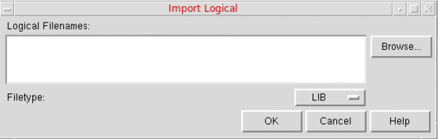

Importing Logical Data in Abstract Generator
导入逻辑数据
The Import Logical form creates cellviews from existing logical information, typically represented in Liberty or Verilog® formats.
Import Logical 窗体会基于已有的逻辑信息创建 cellviews，逻辑信息通常以 Liberty 或 Verilog® 格式提供。
-
Select File – Import – Logical or click the Logical button in the toolbar.
选择 File – Import – Logical，或点击工具栏中的 Logical 按钮。
This displays the Import Logical form.
系统会显示 Import Logical 窗体。

-
In Logical Filenames, specify the names of one or more files you want to import, or use the Browse button to help locate the file and add it to the selection.
在 Logical Filenames 中指定要导入的一个或多个文件名，或使用 Browse 按钮定位文件并将其加入选择列表。 -
You can filter the search by using the Filetype list.
你可以使用 Filetype 列表筛选搜索范围。 -
Choose the required file format, and click OK to import the selected file.
选择所需文件格式，然后点击 OK 导入所选文件。
Abstract Generator creates cells with logical views in the current library directory. If the cell already exists, Abstract Generator does not create a new cell but adds logical view information to the other views present for the cell.
Abstract Generator 会在当前库目录中创建包含 logical view 的 cell。如果该 cell 已存在，Abstract Generator 不会创建新的 cell，而是将 logical view 信息添加到该 cell 的其他现有视图中。
If you import logical information after you have run the Pins step, Abstract Generator confirms that the layout and logical views match before extracting terminal properties from the logical view. Cells that have only a logical view go to the Ignore bin by default.
如果在运行 Pins 步骤之后才导入逻辑信息，Abstract Generator 会在从 logical view 提取 terminal properties 之前，先确认 layout 与 logical 两个视图相匹配。仅包含 logical view 的 cell 默认会进入 Ignore bin。
schematic or symbol view.schematic 或 symbol view 获取逻辑信息，则无法导入 Verilog 或 Liberty 信息。Related Topics
相关主题
Specifying Global Options in General Options form
Return to top